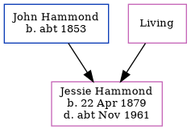

Jessie Elizabeth Hammond 1879 - c1961
[ Home ] | [ Calendar ] | [ Surnames Index ] | [ Family History ]An incapacitated and the daughter of John Hammond and Mary Standing (a lodge house keeper), Jessie Hammond, the third cousin twice-removed on the father's side of Nigel Horne, was born in Folkestone, Kent, England on Apr 22, 18791,2,3,4,5,6.
Jessie spent all of her life in Kent, England. Throughout her life, she lived in several places around the county: at her birthplace in 18811; at 4 Richmond Street in Folkestone on Apr 5, 18918, on Mar 31, 19019, on Apr 2, 191110 (when she was living with her mother, Mary Ann) and on Jun 19, 19214 (when she was living with her mother, Mary Ann); and on 71 Penfold Road in Folkestone on Sep 29, 19395.
She died c. Nov 1961 in Folkestone7.
Parents
- John Rouse was born c. 1853
- Mary Ann
Citations
- 1881 England Census Online publication - Provo, UT, USA: The Generations Network, Inc., 2004. 1881 British Isles Census Index provided by The Church of Jesus Christ of Latter-day Saints © Copyright 1999 Intellectual Reserve, Inc. All rights reserved. All use is subject to the (Relation to Head of House: Daughter)
- 1901 England Census Online publication - Provo, UT, USA: The Generations Network, Inc., 2005.Original data - Census Returns of England and Wales, 1901. Kew, Surrey, England: The National Archives of the UK (TNA): Public Record Office (PRO), 1901. Data imaged from the National
- 1911 England Census Online publication - Provo, UT, USA: Ancestry.com Operations, Inc., 2011.Original data - Census Returns of England and Wales, 1911. Kew, Surrey, England: The National Archives of the UK (TNA), 1911. Data imaged from the National Archives, London, England.
- 1921 Census Of England & Wales - Findmypast (was age 42 and the daughter of the head of the household)
- 1939 Register - Findmypast (was recorded at this address)
- England & Wales births 1837-2006 - Findmypast
- England & Wales deaths 1837-2007 - Findmypast
- 1891 England, Wales & Scotland Census - Findmypast (was age 11 and the daughter of the head of the household)
- 1901 England, Wales & Scotland Census - Findmypast (was age 21 and the daughter of the head of the household)
- 1911 Census for England & Wales - Findmypast (was age 31 and the daughter of the head of the household)
Media
1939 Register Transcription - TNA-R39-1717-1717B-018-11
England & Wales deaths 1837-2007 - BMD/D/1961/4/AZ/000456/034
1911 Census for England & Wales - GBC/1911/RG14/04626/0509/2
1891 England, Wales & Scotland Census Transcription - GBC-1891-0005997895
England & Wales births 1837-2006 - BMD/B/1879/2/AZ/000240/242
1921 Census of England & Wales - GBC/1921/RG15/04558/0553/02
Family Tree
Generated by Ged2Site. Last updated on Jul 20, 2025